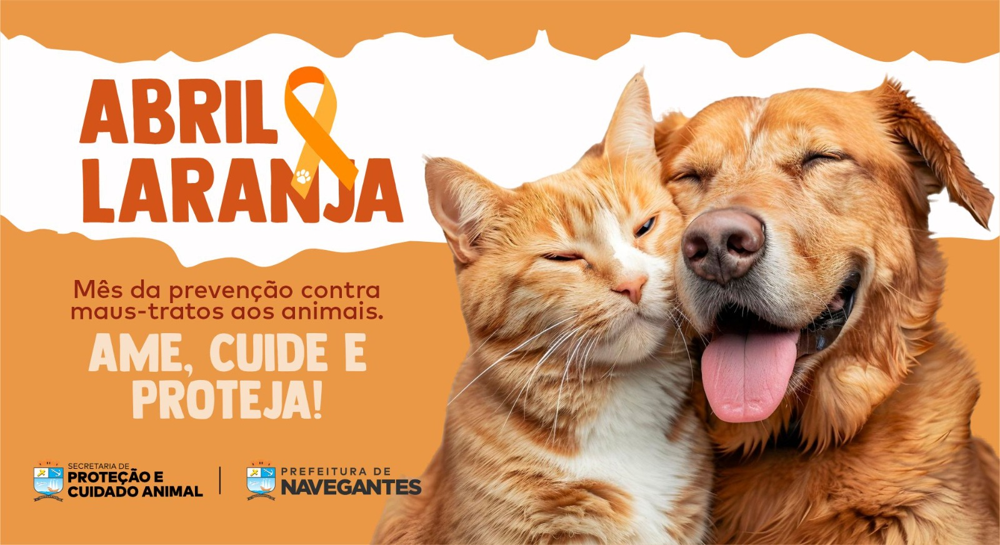

Leis do Abril Laranjamês da concientisação a os maus tratos animais |
|||||
Menu |
 |
||||
Projeto de Lei 1070/22, que obriga proprietários de animais domésticos a garantir o bem-estar físico
e mental do bicho de estimação, incluindo cuidados com nutrição, higiene, saúde, acomodação.
|
|||||
Carlos Eduardo F. Tosto & João Vitor |